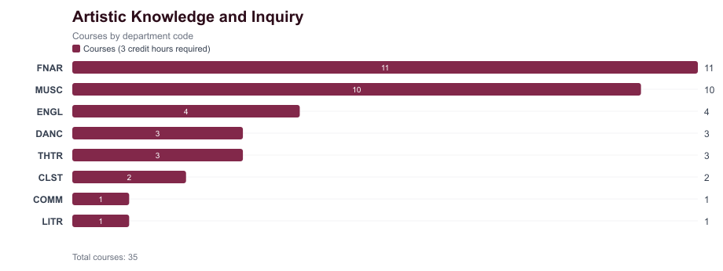
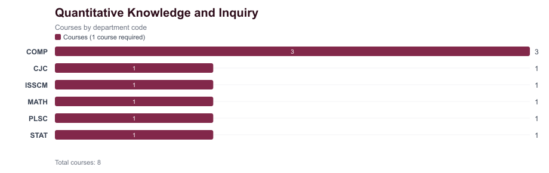
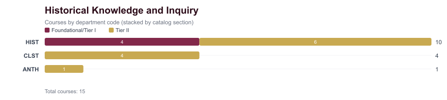
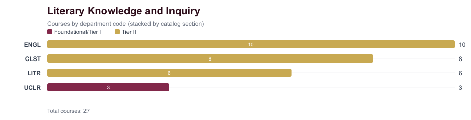
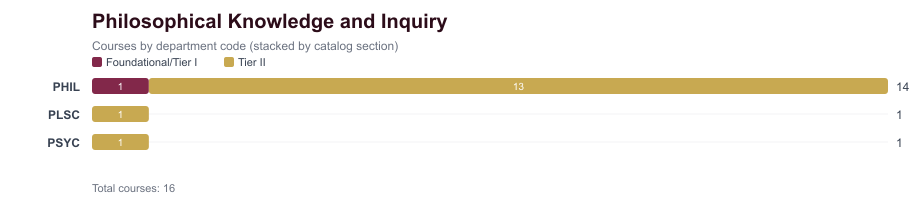
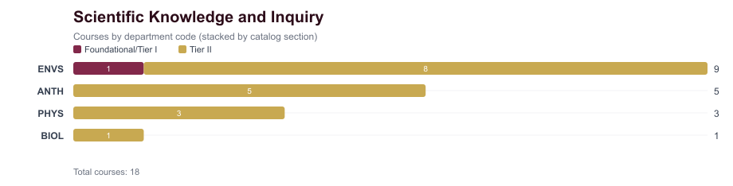
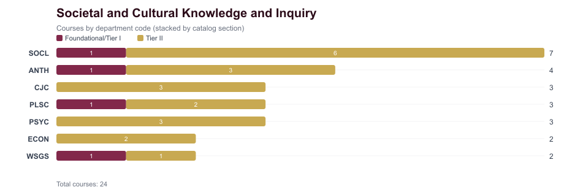
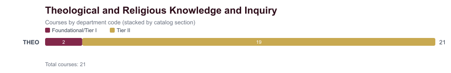

Artistic Knowledge and Inquiry
Source: https://catalog.luc.edu/undergraduate/university-requirements/university-core/core-area-and-courses/artistic-knowledge-experience/
- Requirement IDs
CORE_ART- Required courses
- 1
- Required credits
- 3
- Catalog courses captured
- 35

Chart files: PNG | SVG
Department Counts
| Department | Courses (3 credit hours required) | Total |
|---|
| FNAR | 11 | 11 |
|---|
| MUSC | 10 | 10 |
|---|
| ENGL | 4 | 4 |
|---|
| DANC | 3 | 3 |
|---|
| THTR | 3 | 3 |
|---|
| CLST | 2 | 2 |
|---|
| COMM | 1 | 1 |
|---|
| LITR | 1 | 1 |
|---|
Courses (3 credit hours required)
| Code | Department | Title | Credits | Diversity |
|---|
CLST 206 | CLST | Art of Ancient Greece | 3 | |
CLST 207 | CLST | Art of the Roman World | 3 | |
COMM 274 | COMM | Introduction to Cinema | 3 | |
DANC 111 | DANC | Ballet I: Introduction to Ballet Theory and Technique | 3 | |
DANC 121 | DANC | Modern Dance I: Theories and Techniques | 3 | |
DANC 131 | DANC | Jazz Dance I: Theories and Techniques | 3 | |
ENGL 317 | ENGL | The Writing of Poetry | 3 | |
ENGL 318 | ENGL | The Writing of Fiction | 3 | |
ENGL 318R | ENGL | The Writing of Fiction: Writing Rome | 3 | |
ENGL 319 | ENGL | Writing Creative Nonfiction | 3 | |
FNAR 113 | FNAR | Drawing I | 3 | |
FNAR 114 | FNAR | Painting I | 3 | |
FNAR 115 | FNAR | Foundations of Photography | 3 | |
FNAR 120 | FNAR | Ceramics: Handbuilding | 3 | |
FNAR 121 | FNAR | Ceramics: Wheelthrowing | 3 | |
FNAR 124 | FNAR | Sculpture Foundations | 3 | |
FNAR 199 | FNAR | Art and Visual Culture | 3 | |
FNAR 200 | FNAR | Global Art History: Prehistoric to 600 CE | 3 | |
FNAR 201 | FNAR | Global Art History: 600-1800CE | 3 | |
FNAR 202 | FNAR | Global Art History: Modern Art | 3 | |
FNAR 342 | FNAR | Art in Rome | 3 | |
LITR 264 | LITR | Italian Film Genre | 3 | |
MUSC 101 | MUSC | Music: Art of Listening | 3 | |
MUSC 102 | MUSC | Class Piano for Beginners | 3 | |
MUSC 103 | MUSC | Class Guitar for Beginners | 3 | |
MUSC 105 | MUSC | Symphony Orchestra | 3 | |
MUSC 107 | MUSC | Chorus | 3 | |
MUSC 108 | MUSC | Liturgical Choir: Cantorum | 3 | |
MUSC 109 | MUSC | Jazz Ensemble | 3 | |
MUSC 110 | MUSC | Wind Ensemble | 3 | |
MUSC 142 | MUSC | Class Voice for Beginners | 3 | |
MUSC 154R | MUSC | Introduction to Opera in Rome | 3 | |
THTR 100 | THTR | Intro to Theatre Experience | 3 | |
THTR 252 | THTR | Theatrical Design I | 3 | |
THTR 261 | THTR | Beginning Acting | 3 | |
Quantitative Knowledge and Inquiry
Source: https://catalog.luc.edu/undergraduate/university-requirements/university-core/core-area-and-courses/quantitative-knowledge-inquiry/
- Requirement IDs
CORE_QUANT- Required courses
- 1
- Required credits
- 3
- Catalog courses captured
- 8

Chart files: PNG | SVG
Department Counts
| Department | Courses (1 course required) | Total |
|---|
| COMP | 3 | 3 |
|---|
| CJC | 1 | 1 |
|---|
| ISSCM | 1 | 1 |
|---|
| MATH | 1 | 1 |
|---|
| PLSC | 1 | 1 |
|---|
| STAT | 1 | 1 |
|---|
Courses (1 course required)
| Code | Department | Title | Credits | Diversity |
|---|
CJC 206 | CJC | Statistics | 3 | |
COMP 122 | COMP | Introduction to Digital Music | 3 | |
COMP 125 | COMP | Visual Information Processing | 3 | |
COMP 150 | COMP | Introduction to Computing | 3 | |
ISSCM 241 | ISSCM | Business Statistics | 3 | |
MATH 108 | MATH | Real World Modeling with Mathematics | 3 | |
PLSC 216 | PLSC | Political Numbers | 3 | |
STAT 103 | STAT | Fundamentals of Statistics | 3 | |
Historical Knowledge and Inquiry
Source: https://catalog.luc.edu/undergraduate/university-requirements/university-core/core-area-and-courses/historical-knowledge-inquiry/
- Requirement IDs
CORE_HIST1, CORE_HIST2- Required courses
- 2
- Required credits
- 6
- Catalog courses captured
- 15

Chart files: PNG | SVG
Department Counts
| Department | Foundational/Tier I | Tier II | Total |
|---|
| HIST | 4 | 6 | 10 |
|---|
| CLST | 0 | 4 | 4 |
|---|
| ANTH | 0 | 1 | 1 |
|---|
Foundational/Tier I
| Code | Department | Title | Credits | Diversity |
|---|
HIST 101 | HIST | Culture, Power and Identity: Western Ideas & Institutions to 17th Century | 3 | |
HIST 102 | HIST | Culture, Power and Identity: Western Ideas & Institutions from 17th Century | 3 | |
HIST 103 | HIST | American Pluralism | 3 | Yes |
HIST 104 | HIST | Global History Since 1500 | 3 | Yes |
Tier II
| Code | Department | Title | Credits | Diversity |
|---|
ANTH 107 | ANTH | Ancient Worlds | 3 | Yes |
CLST 274 | CLST | World of Archaic Greece | 3 | |
CLST 275 | CLST | World of Classical Greece | 3 | |
CLST 276 | CLST | World of Classical Rome | 3 | |
CLST 277 | CLST | World of Late Antiquity | 3 | |
HIST 208 | HIST | East Asian History: Themes & Issues | 3 | Yes |
HIST 209 | HIST | Islamic History: Themes & Issues | 3 | Yes |
HIST 210 | HIST | Latin American History: Themes & Issues | 3 | Yes |
HIST 211 | HIST | US History to 1865: Themes & Issues | 3 | |
HIST 212 | HIST | US History since 1865: Themes & Issues | 3 | |
HIST 213 | HIST | African History: Themes & Issues | 3 | Yes |
Literary Knowledge and Inquiry
Source: https://catalog.luc.edu/undergraduate/university-requirements/university-core/core-area-and-courses/literary-knowledge-inquiry/
- Requirement IDs
CORE_LIT1, CORE_LIT2- Required courses
- 2
- Required credits
- 6
- Catalog courses captured
- 27

Chart files: PNG | SVG
Department Counts
| Department | Foundational/Tier I | Tier II | Total |
|---|
| ENGL | 0 | 10 | 10 |
|---|
| CLST | 0 | 8 | 8 |
|---|
| LITR | 0 | 6 | 6 |
|---|
| UCLR | 3 | 0 | 3 |
|---|
Foundational/Tier I
| Code | Department | Title | Credits | Diversity |
|---|
UCLR 100C | UCLR | Interpreting Literature - Classical Studies | 3 | |
UCLR 100E | UCLR | Interpreting Literature - English | 3 | |
UCLR 100M | UCLR | Interpreting Literature - Modern Langs&Literatures | 3 | |
Tier II
| Code | Department | Title | Credits | Diversity |
|---|
CLST 271 | CLST | Classical Mythology | 3 | |
CLST 271G | CLST | Classical Mythology - Women/Gender Focus | 3 | Yes |
CLST 272 | CLST | Heroes & the Classical Epics | 3 | |
CLST 273 | CLST | Classical Tragedy | 3 | |
CLST 273G | CLST | Classical Tragedy - Women/Gender Focus | 3 | Yes |
CLST 279 | CLST | Classical Rhetoric | 3 | |
CLST 280 | CLST | Romance Novel in Ancient World | 3 | |
CLST 283 | CLST | Classical Comedy & Satire | 3 | |
ENGL 271 | ENGL | Exploring Poetry | 3 | |
ENGL 272 | ENGL | Exploring Drama | 3 | |
ENGL 273 | ENGL | Exploring Fiction | 3 | |
ENGL 274 | ENGL | Exploring Shakespeare | 3 | |
ENGL 282 | ENGL | African-American Literature | 3 | Yes |
ENGL 283 | ENGL | Women in Literature | 3 | |
ENGL 284 | ENGL | Asian American Literature | 3 | Yes |
ENGL 287 | ENGL | Religion and Literature | 3 | |
ENGL 288 | ENGL | Nature in Literature | 3 | |
ENGL 290 | ENGL | Human Values in Literature | 3 | |
LITR 200 | LITR | European Masterpieces | 3 | |
LITR 202 | LITR | European Novel | 3 | |
LITR 238 | LITR | Arabic Literature in Translation | 3 | Yes |
LITR 245 | LITR | Asian Masterpieces | 3 | Yes |
LITR 280 | LITR | World Masterpieces in Translation | 3 | Yes |
LITR 283 | LITR | Major Authors in Translation | 3 | |
Philosophical Knowledge and Inquiry
Source: https://catalog.luc.edu/undergraduate/university-requirements/university-core/core-area-and-courses/philosophical-knowledge-inquiry/
- Requirement IDs
CORE_PHIL1, CORE_PHIL2- Required courses
- 2
- Required credits
- 6
- Catalog courses captured
- 16

Chart files: PNG | SVG
Department Counts
| Department | Foundational/Tier I | Tier II | Total |
|---|
| PHIL | 1 | 13 | 14 |
|---|
| PLSC | 0 | 1 | 1 |
|---|
| PSYC | 0 | 1 | 1 |
|---|
Foundational/Tier I
| Code | Department | Title | Credits | Diversity |
|---|
PHIL 130 | PHIL | Philosophy & Persons | 3 | |
Tier II
| Code | Department | Title | Credits | Diversity |
|---|
PHIL 271 | PHIL | Philosophy of Religion | 3 | |
PHIL 272 | PHIL | Metaphysics | 3 | |
PHIL 273 | PHIL | Philosophy of Science | 3 | |
PHIL 274 | PHIL | Logic | 3 | |
PHIL 275 | PHIL | Theory of Knowledge | 3 | |
PHIL 277 | PHIL | Aesthetics | 3 | |
PHIL 277R | PHIL | Aesthetics: the Aesthetic Experience in Rome | 3 | |
PHIL 279 | PHIL | Judgment and Decision-Making | 3 | |
PHIL 284 | PHIL | Health Care Ethics | 3 | |
PHIL 286 | PHIL | Ethics and Education | 3 | |
PHIL 287 | PHIL | Environmental Ethics | 3 | |
PHIL 288 | PHIL | Culture and Civilization | 3 | |
PHIL 288R | PHIL | Culture & Civilization in Rome | 3 | |
PLSC 100 | PLSC | Political Theory | 3 | |
PSYC 280 | PSYC | Psychology of Judgment and Decision-Making | 3 | |
Scientific Knowledge and Inquiry
Source: https://catalog.luc.edu/undergraduate/university-requirements/university-core/core-area-and-courses/scientific-knowledge-inquiry/
- Requirement IDs
CORE_SCI1, CORE_SCI2- Required courses
- 2
- Required credits
- 6
- Catalog courses captured
- 18

Chart files: PNG | SVG
Department Counts
| Department | Foundational/Tier I | Tier II | Total |
|---|
| ENVS | 1 | 8 | 9 |
|---|
| ANTH | 0 | 5 | 5 |
|---|
| PHYS | 0 | 3 | 3 |
|---|
| BIOL | 0 | 1 | 1 |
|---|
Foundational/Tier I
| Code | Department | Title | Credits | Diversity |
|---|
ENVS 101 | ENVS | The Scientific Basis of Environmental Issues | 3 | |
Tier II
| Code | Department | Title | Credits | Diversity |
|---|
ANTH 101 | ANTH | Human Origins | 3 | Yes |
ANTH 103 | ANTH | Biological Background Human Social Behavior | 3 | Yes |
ANTH 104 | ANTH | The Human Ecological Footprint | 3 | |
ANTH 105 | ANTH | Human Biocultural Diversity | 3 | Yes |
ANTH 106 | ANTH | Sex, Science and Anthropological Inquiry | 3 | Yes |
BIOL 110 | BIOL | Liberal Arts Biology | 3 | |
ENVS 207 | ENVS | Plants and Civilization | 3 | |
ENVS 218 | ENVS | Biodiversity & Biogeography | 3 | |
ENVS 223 | ENVS | Soil Ecology | 3 | |
ENVS 224 | ENVS | Climate & Climate Change | 3 | |
ENVS 226 | ENVS | Science & Conservation of Freshwater Ecosystems | 3 | |
ENVS 273 | ENVS | Energy and the Environment | 3 | |
ENVS 281 | ENVS | Environmental Sustainability & Science in China | 3 | |
ENVS 283 | ENVS | Environmental Sustainability | 3 | |
PHYS 101 | PHYS | Liberal Arts Physics | 3 | |
PHYS 102 | PHYS | Planetary and Stellar Astronomy | 3 | |
PHYS 106 | PHYS | Physics of Music | 3 | |
Societal and Cultural Knowledge and Inquiry
Source: https://catalog.luc.edu/undergraduate/university-requirements/university-core/core-area-and-courses/societal-cultural-knowledge-inquiry/
- Requirement IDs
CORE_SOC1, CORE_SOC2- Required courses
- 2
- Required credits
- 6
- Catalog courses captured
- 24

Chart files: PNG | SVG
Department Counts
| Department | Foundational/Tier I | Tier II | Total |
|---|
| SOCL | 1 | 6 | 7 |
|---|
| ANTH | 1 | 3 | 4 |
|---|
| CJC | 0 | 3 | 3 |
|---|
| PLSC | 1 | 2 | 3 |
|---|
| PSYC | 0 | 3 | 3 |
|---|
| ECON | 0 | 2 | 2 |
|---|
| WSGS | 1 | 1 | 2 |
|---|
Foundational/Tier I
| Code | Department | Title | Credits | Diversity |
|---|
ANTH 100 | ANTH | Globalization and Local Cultures | 3 | Yes |
PLSC 102 | PLSC | International Relations in an Age of Globalization | 3 | Yes |
SOCL 101 | SOCL | Society in a Global Age | 3 | Yes |
WSGS 101 | WSGS | Introduction to WSGS from a Global Perspective | 3 | Yes |
Tier II
| Code | Department | Title | Credits | Diversity |
|---|
ANTH 102 | ANTH | Culture, Society, and Diversity | 3 | Yes |
ANTH 203 | ANTH | Violence, Social Suffering, and Justice | 3 | Yes |
ANTH 208 | ANTH | Language and Identity | 3 | Yes |
CJC 345 | CJC | Social Justice and Crime | 3 | Yes |
CJC 370 | CJC | Women in The Criminal Justice System | 3 | Yes |
CJC 372 | CJC | Race, Ethnicity, and Criminal Justice | 3 | Yes |
ECON 201 | ECON | Principles of Microeconomics | 3 | |
ECON 202 | ECON | Principles of Macroeconomics | 3 | |
PLSC 101 | PLSC | American Politics | 3 | |
PLSC 103 | PLSC | Comparative Politics | 3 | |
PSYC 101 | PSYC | General Psychology | 3 | |
PSYC 238 | PSYC | Psychology of Gender | 3 | Yes |
PSYC 275 | PSYC | Social Psychology | 3 | Yes |
SOCL 121 | SOCL | Social Problems | 3 | Yes |
SOCL 122 | SOCL | Race and Ethnic Relations | 3 | Yes |
SOCL 125 | SOCL | Chicago: Urban Metropolis | 3 | Yes |
SOCL 145 | SOCL | Religion & Society | 3 | Yes |
SOCL 171 | SOCL | Sociology of Sex and Gender | 3 | Yes |
SOCL 250 | SOCL | Inequality in Society | 3 | Yes |
WSGS 201 | WSGS | Contemporary Issues in WSGS | 3 | Yes |
Theological and Religious Knowledge and Inquiry
Source: https://catalog.luc.edu/undergraduate/university-requirements/university-core/core-area-and-courses/theological-religious-knowledge-inquiry/
- Requirement IDs
CORE_THEO1, CORE_THEO2- Required courses
- 2
- Required credits
- 6
- Catalog courses captured
- 21

Chart files: PNG | SVG
Department Counts
| Department | Foundational/Tier I | Tier II | Total |
|---|
| THEO | 2 | 19 | 21 |
|---|
Foundational/Tier I
| Code | Department | Title | Credits | Diversity |
|---|
THEO 100 | THEO | Christian Theology | 3 | |
THEO 107 | THEO | Introduction to Religious Studies | 3 | Yes |
Tier II
| Code | Department | Title | Credits | Diversity |
|---|
THEO 203 | THEO | Social Justice and Injustice | 3 | Yes |
THEO 204 | THEO | Religious Ethics and the Ecological Crisis | 3 | Yes |
THEO 214 | THEO | Introduction to the Qur'an | 3 | |
THEO 231 | THEO | Hebrew Bible/Old Testament | 3 | |
THEO 232 | THEO | New Testament | 3 | |
THEO 265 | THEO | Sacraments and the Christian Imagination | 3 | |
THEO 266 | THEO | Church & Global Cultures | 3 | |
THEO 267 | THEO | Jesus Christ | 3 | |
THEO 272 | THEO | Judaism | 3 | Yes |
THEO 276 | THEO | Black World Religion | 3 | Yes |
THEO 278 | THEO | Religion & Gender | 3 | Yes |
THEO 279 | THEO | Roman Catholicism | 3 | |
THEO 280 | THEO | Religion & Interdisciplinary Studies | 3 | |
THEO 281 | THEO | Christianity Through Time | 3 | |
THEO 282 | THEO | Hinduism | 3 | Yes |
THEO 293 | THEO | Christian Marriage | 3 | |
THEO 295 | THEO | Islam | 3 | Yes |
THEO 297 | THEO | Buddhism | 3 | Yes |
THEO 299 | THEO | Religions of Asia | 3 | Yes |
{kind=link}
{kind=link}
{kind=link}
{kind=link}
{kind=link}
{kind=link}
{kind=link}
{kind=link}
{kind=link}
{kind=link}
{kind=link}
{kind=link}
{kind=link}
{kind=link}
{kind=link}
{kind=link}
{kind=link}
{kind=link}
{kind=link}
{kind=link}